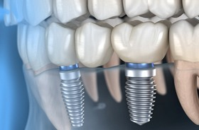
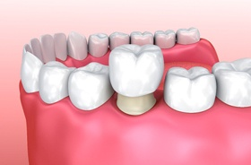
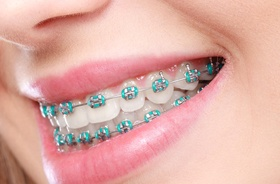

Dental Services – Manchester, CT
Experienced, Patient-Driven Services That Make a Difference
At First Line Dental, we take a great deal of pride in creating healthy, confident smiles for life. That is why our dental office features a variety of services. Whether your child is ready for their first appointment, you are interested in finally restoring a lost tooth, or it is time to pursue a straighter and healthier smile with braces, we have the skills and experience to make these goals happen right here in Manchester, CT.
To learn more about our services, follow the links below. You are always welcome to contact us directly with questions or to schedule an appointment.
Why Choose First Line Dental for Oral Healthcare?
- General and advanced services available
- Weekend appointments available
- Courteous and empathetic staff
Dental Implants

Dental implants are small posts that imitate the roots of missing teeth; they support crowns, bridges, or dentures that replace the visible parts of the lost teeth. Dental implants are the best way to replace missing teeth because they rebuild lost dentition from the roots up. They look and feel very natural, and they are sturdy enough to stand the test of time. Here at First Line Dental in Manchester, we offer convenient start-to-finish dental implant services right here in our office.
Cosmetic Dentistry
Are you unhappy with the way your teeth look? We may be able to help you via one of our cosmetic services. Porcelain veneers have the potential to totally transform your smile, and porcelain restorations can strengthen and reshape damaged teeth. A professional whitening treatment can break up even deep-set stains and help your smile attain a new level of radiance. Our team will work closely with you to help you achieve the stunning yet natural-looking results you desire.
Dental Crowns

Dental crowns are custom-designed restorations that cover an entire tooth (that is, everything above the gum line). Their primary job is to fortify a weakened tooth and prevent it from suffering further damage. In some cases, they can be used for purely cosmetic purposes. They may also serve as part of a dental bridge that replaces one or more missing teeth. In addition to traditional metal crowns, we offer aesthetically pleasing ceramic restorations that blend in seamlessly with the surrounding teeth.
Orthodontics

Misaligned teeth pose a threat to your oral health, and they may even diminish your self-confidence. We are proud to have an on-staff orthodontist who can help you and your family members to achieve a straighter, healthier smile. Whether you are interested in traditional metal braces, clear aligners (Invisalign), or another type of orthodontic treatment, our orthodontist will evaluate your needs, answer all of your questions, and help you fully understand the road ahead of you.
Emergency Dentistry
It could happen to anyone. One moment, you are feeling fine, and the next you are suffering from significant oral pain, whether due to physical trauma or a longstanding oral health issue that suddenly decides to call attention to itself. If you ever find yourself in need of urgent dental care, the team at First Line Dental is ready to help. We are usually able to see emergency patients on a same-day basis. We will work quickly to relieve your pain and get you on the road to recovery.